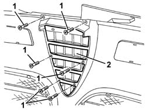
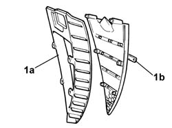

7055A40 RADIATOR SHIELD - R R
- Path
- Procedures > 70 FITTINGS > 7055 MOULDINGS ON PROTECTIONS > 7055A EXTERIOR MOULDINGS > 7055A40 RADIATOR SHIELD - R R
- Kind
- repair procedure (removal / refitting; the operation number is the code)
- Applies to
- all engines; all production periods
- Interactive page
- https://sloeber94.github.io/elrnDB-aGt/en/#/125001965
Applies to: all engines; all production periods
 Removing
Removing
 Refitting
RefittingOp. 4450B02 LEFT FRONT WHEEL R R
Op. 4450B04 RIGHT FRONT WHEEL R R
Op. 7055B54 UNDER-ENGINE GUARD - R R
Op. 7055B64 LH OR RH REFLECTOR(ONE) ON REAR BUMPERS - R R
Op. 7055B65 ENGINGE BAY DUSTGUARD PROTECTION IN LEFT FRONT WHEEL ARCH R R
Op. 7055B90 LEFT FRONT WHEEL ARCH LINER - R.R.
Op. 7055B91 RIGHT FRONT WHEEL ARCH LINER - R.R.
1. Undo the retaining bolts.
2. Remove the shield.

Applies to: all engines; all production periods
1. If necessary, separte the outer frame (1a) and remove the trims (1b) releasing them from the retaining pins.

Applies to: all engines; all production periods
Refitting
RemovingCheck that the shield is undamaged.
If the panels were removed, refit and do up the retainers.
If removed, reposition the outer frame.
Position the shield and secure it using the bolts.
Op. 7055B91 RIGHT FRONT WHEEL ARCH LINER - R.R.
Op. 7055B90 LEFT FRONT WHEEL ARCH LINER - R.R.
Op. 7055B64 LH OR RH REFLECTOR(ONE) ON REAR BUMPERS - R R
Op. 7055B65 ENGINGE BAY DUSTGUARD PROTECTION IN LEFT FRONT WHEEL ARCH R R
Op. 7055B54 UNDER-ENGINE GUARD - R R
Topics linked from this page (7)
- 4450B02 LEFT FRONT WHEEL R R
- 4450B04 RIGHT FRONT WHEEL R R
- 7055B54 UNDER-ENGINE GUARD - R R
- 7055B64 LH OR RH REFLECTOR(ONE) ON REAR BUMPERS - R R
- 7055B65 ENGINGE BAY DUSTGUARD PROTECTION IN LEFT FRONT WHEEL ARCH R R
- 7055B90 LEFT FRONT WHEEL ARCH LINER - R.R.
- 7055B91 RIGHT FRONT WHEEL ARCH LINER - R.R.